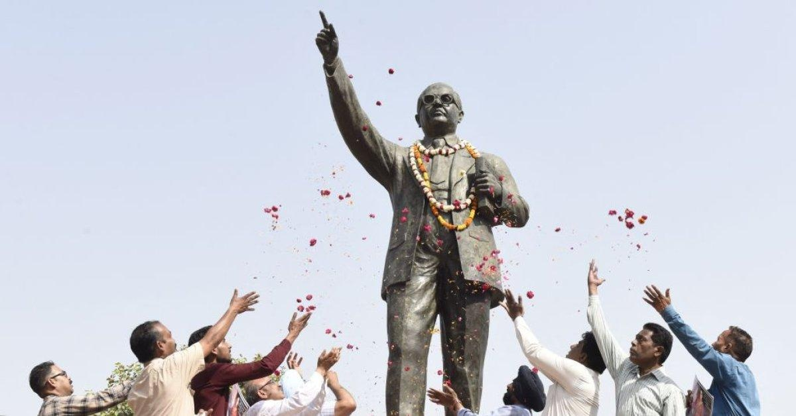

Why India Today Shouldn't Forget the Legacy of AmbedkarThe first question I am often asked about my new book is “why Ambedkar? Why now?” I am tempted to respond by informing my questioners of two facts of which even most Indians are unaware. First, there is no Indian of whom more statues have been erected across the length and breadth of India than Bhimrao Ramji Ambedkar, barring, perhaps, Mahatma Gandhi. Second, when, in 2012, two respected television channels conducted a poll to name the Greatest Indian, over 20 million voters participated and resoundingly picked Ambedkar, ahead of Gandhi, Nehru, and other giants of contemporary Indian history. Arguably, there is no more important figure in contemporary India, after Mahatma Gandhi, than Dr, Ambedkar. His posthumous stature has grown enormously: a controversial figure in his own lifetime, who lost more elections than he won and attracted both opprobrium and admiration in equal measure, he is almost beyond criticism today. All Indian political parties seek to lay claim to his legacy. Yet he is not as well-known globally as he deserves to be. That’s why I wrote a short, accessible biography for the general reader. It is difficult today to imagine the scale of what Dr. Babasaheb Bhimji Rao Ambedkar accomplished. To be born into an “untouchable” family in 1891, as the 14th and last child of a poor Mahar subedar, or non-commissioned officer, in an Army cantonment, would normally have guaranteed a life of neglect, poverty, discrimination, and obscurity. Not only did Ambedkar rise above the circumstances of his birth, but he achieved a level of success that would have been spectacular for a child of privilege. One of the first “untouchables” ever to enter an Indian college, he became a professor (at the prestigious Sydenham College) and a Principal (of no less an institution than Bombay’s Government Law College, then the top law college in the country). As one of the earliest Indian students in the United States, he earned multiple doctorates from Columbia University and the University of London, earning advanced qualifications in economics, politics, and law. An heir to millennia of discrimination, he was admitted to the bar in London and became India’s James Madison as the Chair of the Constitution Drafting Committee. The descendant of illiterates, he wrote a remarkable number of books, whose content and range testify to an eclectic mind and a sharp, if provocative, intellect. An insignificant infant scrabbling in the dust of Mhow in 1891 became the first Law Minister of a free India in 1947, in the most impressive Cabinet ever assembled in New Delhi. When he died in 1956, aged only 65, Ambedkar had accumulated a set of distinctions few have matched: he had successfully challenged millennia-old discrimination against Dalits (formerly “untouchables” or “depressed classes”), instituted the world’s oldest and farthest-reaching affirmative action programme for his people and entrenched it in the Constitution, promoted liberal constitutionalism in a traditionally illiberal society, managed a balance between individual agency for India’s citizens and collective affirmation action for its most marginalised communities, and articulated the most cogent and enduring case for the principles and practices of democracy in a country emerging from imperial rule. Ambedkar’s was a monumental life. His towering achievements were made despite suffering and enduring humiliations that might have been enough to crush the spirit of a lesser man, or turn him into a destructive rebel. Denied permission to sit at a desk like his other classmates and obliged to learn his lessons from a gunny sack on the floor which no one would touch, and thrashed for daring to open a water tap at school when he was thirsty (since his touch was deemed polluting), Ambedkar still achieved rare academic excellence, winning scholarships for higher studies abroad and earning multiple doctorates in an era when upper-caste men wrote “B.A. (Failed)” after their names to show they had got that far. Returning to the service of the Maharajah who had sponsored his studies abroad, he found no one in the city willing to rent an abode to an “untouchable”, resorted to deception, was found out and thrown into the street. Sitting in a park at night with his papers and certificates strewn around him, he wept bitterly and quit the prestigious job he had earned on merit. Rising from such humiliations to become the most consequential political and social reformer of a glittering generation of freedom-fighters was Ambedkar’s triumph. It is important to realise that Ambedkar was not only an economist of the highest quality—Amartya Sen, India’s only Nobel Prize-winning economist, was to hail him as the “father” of his own economics—and a legal scholar of rare distinction, but also a pioneering social anthropologist, whose 1916 paper on caste at a conference in Columbia was arguably the first serious academic study of the origins and practice of the caste system in India. Ambedkar was also modern India’s first male feminist: his speeches and legislative initiatives on women’s rights nearly ninety years ago would be considered progressive even today in India. As a legal thinker, his emphasis on individual agency, his innovative promotion of fraternity among all Indians irrespective of caste differences, and his understanding of the true meaning of “effective representation” in a democracy are key to the constitutional system that has been established and entrenched over the last three-quarters of a century. As a social reformer, Ambedkar’s emphasis on education as the passport to social advancement and economic empowerment for “subalterns” continues to resonate in today’s India. The very idea of Indianness, so brilliantly articulated by Jawaharlal Nehru and his acolytes, was infused with an extra dimension when viewed through Ambedkar’s lens of social justice for those who had been oppressed and marginalised for millennia. Finally, in the constant tension between Mahatma Gandhi’s vision of India and Ambedkar’s, it is fair to say that it is the latter’s vision that endures, codified in the Constitution of the Republic. And that vision is his finest legacy. In the perennial tension between communitarian privileges and individual rights, Ambedkar stood squarely on the side of the individual. In the battle between timeless traditions and modern conceptions of social justice, Ambedkar tilted the scales decisively toward the latter. In the contestation between the wielders of power and the drafters of law, Ambedkar carved a triumphant place for enabling change through democracy and legislation. In a fractured and divided Hindu society he gave the Dalits a sense of collective pride and individual self-respect. In so doing, he transformed the lives of millions yet unborn, heaving an ancient civilization into the modern era through the force of his intellect and the power of his pen. - Democrats Fear Biden Caving Over Debt Limit - Florence Pugh Might Just Save the Movie Star From Extinction - Why Greg Might Come Out on Top in Succession - How Four Trans Teens Threw the Prom of Their Dreams - The DeSantis Project - How One Family Told the Story of the Tulsa Massacre - Companies Are Finally Designing Offices for the New Work Reality - Meet TIME's Newest Class of Next Generation Leaders |
 |